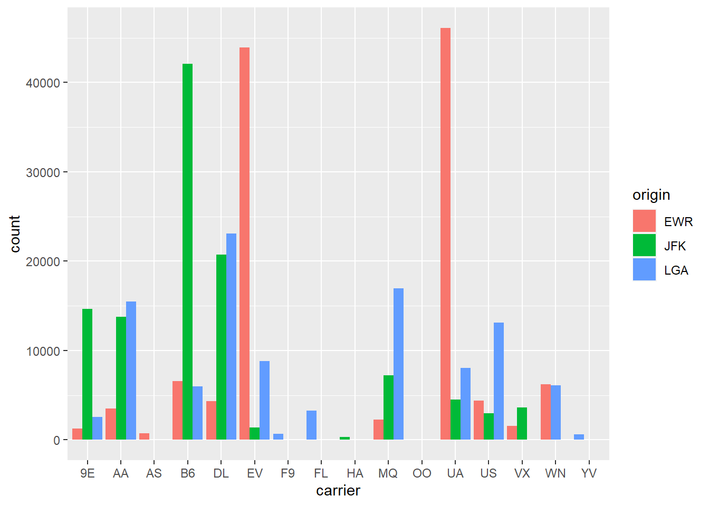

library(tidyverse)
library(RColorBrewer)
library(nycflights13)Lec 05: In-class Exercise: Color Theory
Apply Color Theory to Scatterplots and Barplots
Pre-requisites:
Since we will be working with color palettes today, we are going to install the RColorBrewer package in R. Enter the following in your R Console.
install.packages("RColorBrewer")
Note: Remember, we only need to install packages once to have their functions available for us in our
Renvironments.
Step 1: Load Packages
Load the package and the dataset we need to work on our analysis today.
Step 2: View the flights Data Frame Using Two Approaches
# Write your code below
flights# A tibble: 336,776 × 19
year month day dep_time sched_dep_time dep_delay arr_time sched_arr_time
<int> <int> <int> <int> <int> <dbl> <int> <int>
1 2013 1 1 517 515 2 830 819
2 2013 1 1 533 529 4 850 830
3 2013 1 1 542 540 2 923 850
4 2013 1 1 544 545 -1 1004 1022
5 2013 1 1 554 600 -6 812 837
6 2013 1 1 554 558 -4 740 728
7 2013 1 1 555 600 -5 913 854
8 2013 1 1 557 600 -3 709 723
9 2013 1 1 557 600 -3 838 846
10 2013 1 1 558 600 -2 753 745
# ℹ 336,766 more rows
# ℹ 11 more variables: arr_delay <dbl>, carrier <chr>, flight <int>,
# tailnum <chr>, origin <chr>, dest <chr>, air_time <dbl>, distance <dbl>,
# hour <dbl>, minute <dbl>, time_hour <dttm># Write your code below
glimpse(flights)Rows: 336,776
Columns: 19
$ year <int> 2013, 2013, 2013, 2013, 2013, 2013, 2013, 2013, 2013, 2…
$ month <int> 1, 1, 1, 1, 1, 1, 1, 1, 1, 1, 1, 1, 1, 1, 1, 1, 1, 1, 1…
$ day <int> 1, 1, 1, 1, 1, 1, 1, 1, 1, 1, 1, 1, 1, 1, 1, 1, 1, 1, 1…
$ dep_time <int> 517, 533, 542, 544, 554, 554, 555, 557, 557, 558, 558, …
$ sched_dep_time <int> 515, 529, 540, 545, 600, 558, 600, 600, 600, 600, 600, …
$ dep_delay <dbl> 2, 4, 2, -1, -6, -4, -5, -3, -3, -2, -2, -2, -2, -2, -1…
$ arr_time <int> 830, 850, 923, 1004, 812, 740, 913, 709, 838, 753, 849,…
$ sched_arr_time <int> 819, 830, 850, 1022, 837, 728, 854, 723, 846, 745, 851,…
$ arr_delay <dbl> 11, 20, 33, -18, -25, 12, 19, -14, -8, 8, -2, -3, 7, -1…
$ carrier <chr> "UA", "UA", "AA", "B6", "DL", "UA", "B6", "EV", "B6", "…
$ flight <int> 1545, 1714, 1141, 725, 461, 1696, 507, 5708, 79, 301, 4…
$ tailnum <chr> "N14228", "N24211", "N619AA", "N804JB", "N668DN", "N394…
$ origin <chr> "EWR", "LGA", "JFK", "JFK", "LGA", "EWR", "EWR", "LGA",…
$ dest <chr> "IAH", "IAH", "MIA", "BQN", "ATL", "ORD", "FLL", "IAD",…
$ air_time <dbl> 227, 227, 160, 183, 116, 150, 158, 53, 140, 138, 149, 1…
$ distance <dbl> 1400, 1416, 1089, 1576, 762, 719, 1065, 229, 944, 733, …
$ hour <dbl> 5, 5, 5, 5, 6, 5, 6, 6, 6, 6, 6, 6, 6, 6, 6, 5, 6, 6, 6…
$ minute <dbl> 15, 29, 40, 45, 0, 58, 0, 0, 0, 0, 0, 0, 0, 0, 0, 59, 0…
$ time_hour <dttm> 2013-01-01 05:00:00, 2013-01-01 05:00:00, 2013-01-01 0…Scatterplot
Step 3: Create a Scatterplot with Two Continuous Variables
ggplot(data = flights,
aes(x = dep_delay,
y = arr_delay)) +
geom_point()Step 4: Map the Variable origin to the Color Aesthetic
# Add your code
ggplot(data = flights,
aes(x = dep_delay,
y = arr_delay)) +
geom_point(aes(color=origin))Step 5: Recreate the Figure but Change Default “color” of Points by Adding a Palette Layer
For palette choices, you can run the code below.
RColorBrewer::display.brewer.all()
There are three types of color palettes that can be added to a plot:
- Sequential: A uni-directional ordering of shades.
- Diverging: A bi-directional ordering of shades.
- Qualitative: A discrete set of colors.
# Paste the code below and adjust it
ggplot(data = flights,
aes(x = dep_delay,
y = arr_delay)) +
geom_point(aes(color=origin)) +
scale_color_brewer(palette="Dark2")Barplot
Step 6: Study Codes of Figure 2.26 in ModernDive
ggplot(data = flights,
aes(x = carrier,
fill = origin)) +
geom_bar(position = position_dodge(preserve = "single"))
Step 7: Recreate Figure 2.26 but Change Default “fill” Color of Bars by Adding a Palette Layer
Add a palette layer of your choice. To determine how to do this, direct your attention to the Color and Fill Scales section of the ggplot2 cheatsheet.
# Add your code
ggplot(data = flights,
aes(x = carrier,
fill = origin)) +
geom_bar(position = position_dodge(preserve = "single")) +
scale_fill_brewer(palette = "Spectral")Step 8: Recreate Figure 2.26 but Change Default “fill” Color of Bars by Manually Changing Colors in a Layer
Run colors() in your console to get English names of all colors in R.
Manually change colors of your choice. To determine how to do this, direct your attention to the Scales section of the ggplot2 cheatsheet.
# Add your code
ggplot(data = flights,
aes(x = carrier,
fill = origin)) +
geom_bar(position = position_dodge(preserve = "single")) +
scale_fill_manual(values = c("black","purple","yellow"))Step 9: Recreate Figure 2.26 but Change Default “fill” Color of Bars by Manually Changing Colors in a Layer Using Hex Codes
# Add your code
ggplot(data = flights,
aes(x = carrier,
fill = origin)) +
geom_bar(position = position_dodge(preserve = "single")) +
scale_fill_manual(values = c("#9a5af2","#a0db8e","#f4376d"))Finally just because we mentioned it in the Facet lecture. Add a facet_wrap(facets=~origin) layer to the bottom of your code
# Add your code
ggplot(data = flights,
aes(x = carrier,
fill = origin)) +
geom_bar(position = position_dodge(preserve = "single")) +
facet_wrap(facets=~origin)If you are able to render the file as a html or pdf your code is all correct!